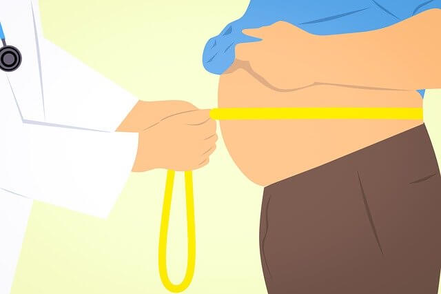
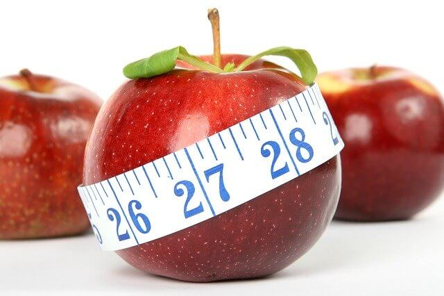
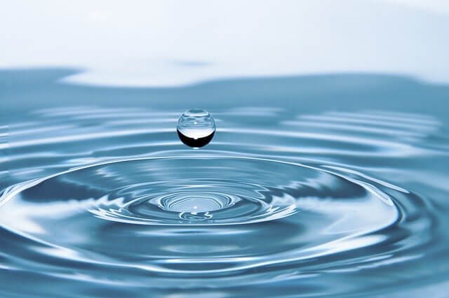
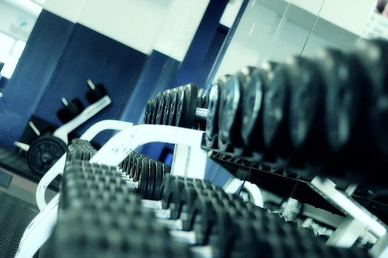
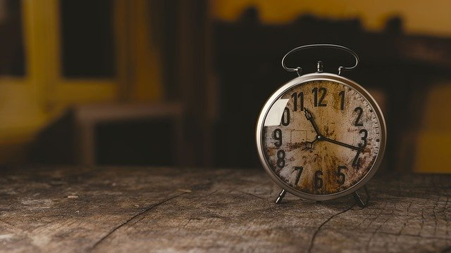

7 Ways to Lower Body Fat Percentage
Losing weight is hard and takes discipline, dedication and time. Just ask anyone trying to slim down and fit into that perfect pair of jeans.
If you are interested in figuring out your body fat percentage, check out our A.I. body fat percentage calculator.

Here are 7 tips to help you lower your body fat percentage and get you closer to that body you’ve always wished for:
1. Get More Sleep
2. Focus on the Type of Calories Not the Number of Calories
3. Drink More Water
4. Lift Weights
5. Focus on Meal Timing
6. Stop Snacking
7. Eliminate Wheat
Get More Sleep
If you are not well-rested, it shows. Not just externally but internally too. Short sleepers (both children and adults) have been found to have an increased risk of obesity and weight gain.
The body only recovers from a training session with a good night’s rest. Lack of sleep increases cravings for highly refined foods and correlates with high levels of cortisol (stress hormone) and ghrelin (the hunger hormone).
The irregularity in hormonal levels affects portion sizing (i.e., eating more than you need) and there is evidence to suggest resting metabolic rate (amount of energy burned at rest) is lower when you are sleep deprived as a result of muscle loss.
Self-control and decision making is negatively affected by the lack of sleep while the reward centers of the brain are more aroused by food. This unsteady sleeping pattern increases cravings for highly refined foods and directly leads to overeating and weight gain.
The body produces growth hormone when sleeping. This helps in muscle recovery and fat breakdown. Insufficient sleep leads to a lack of production of growth hormone.
Aim for a minimum of 7 to 8 hours of sleep per night. Keep sleeping and waking times consistent. Avoid stimulants like coffee and tea late at night. Make sure the bedroom is completely dark.
Use a sleeping
mask if need be. It has been observed that mice gained 50% more
fat when exposed to light at night (as the light exposure prevented deep sleep thereby increasing its food intake during the day).
Focus on Type of Calories Not the Number of Calories
When you focus on eating the right foods, don’t worry about the total calories eaten. The body makes it known when to stop eating. This is because you achieve a faster feeling of satiety (feeling full) when you increase your protein intake. Weight loss results from a reduced appetite.
Low glycemic index foods help you achieve satiety faster as the food takes longer to break down and digest. High glycemic foods such as ice cream, pasta, and bread spike your blood sugar (glucose) upon consumption and follow that by a crash.
This crash returns the feelings of hunger even though you’ve eaten more than your daily calorie needs. The right types of calories negate the need to eat more than you actually need.

If you ate two 10-ounce steaks, it would extremely hard to eat two more even if you didn’t eat anything else during the day. Counter that to eating an entire bowl of ice cream. I’m pretty sure you could probably eat the entire tub without a flinch.
The ice cream consisting of empty calories will leave you hungry again the moment blood sugar drops. This is because the ice cream consists of mostly empty calories.
In the scenario above, the steak (low-glycemic) consisting of protein and fat takes longer to digest compared to the ice-cream (high glycemic), of which the majority of the calories come from sugar (refined carbohydrates). You don’t experience a blood sugar spike followed by a crash in the case of the steak as it needs to be broken down to be of any use. This process takes time. The refined carbohydrates in the ice-cream, on the other hand, are rapidly absorbed in the gut.
Drink More Water
There is no set rule as to how much water you should be drinking per day as everyone’s need differs but in general, most people need 1 to 2 liters/day.
As a simple rule for yourself, drink when you’re thirsty. Drinking water before meals has been shown to reduce food intake in
individuals aged 6 to 80 years.
Also, Overweight women that increased
their water consumption lost weight regardless of the current diet they were on. Resting energy expenditure increases post water consumption and as a side benefit water is known to flush toxins from your body and improve your skin.

Replacing sugary beverages such as pop and fruit juices with water leads to weight loss as water does not contain any calories. A single can of pop can contain as much as 35 grams of sugar and will cause a rise in your blood sugar levels followed by a quick crash.
This, in turn, will make you crave even more sugary beverages. Diet beverages have no calories but it can cause insulin spikes and then lead to further cravings for highly refined foods. It’s best to simply avoid pop altogether.
To drink more water, just keep a water bottle at your side at all times. This will save you money and prevent you from drinking any calories. A simple life hack is to drink cold water as cold water makes you burn more energy (since the body must warm it up to body temperature to put it to use).
Lift Weights
Adding muscle to your body increases metabolism leading to higher energy consumption and increased fat metabolism.
Strength training boosts testosterone and growth hormone which aids in muscle recovery. Resting metabolic rate (amount of energy burned at rest) greatly increases post-training with the introduction of weight training into your daily routine.

Lifting weights has also been shown to increase insulin sensitivity (getting better at partitioning nutrients). Setting goals and targets is a great way to keep increasing reps and weight lifted. This results in an increase in overall strength and more muscle mass. Make sure to eat accordingly to your workouts.
If you’re short for time, choose a more intensive workout. Shorter more intensive workouts can not only save you time but lead to greater weight loss.
Compound exercises such a squat and deadlifts train multiple muscle groups all at once. Combining aerobic activity along with strength training helps improve endurance while keeping a healthy heart with more energy.
Focus on Meal Timing
The circadian rhythm helps the body adjust to changes in the environment, sleep, and food.
It has been shown that individuals that ate and slept out of their circadian rhythm had symptoms of metabolic syndrome, a precursor to heart disease and diabetes. Therefore, coordinating your meals with your natural circadian rhythm is an easy way to burn more fat.

Timing your meals have been shown to better regulate hormones, sleeping pattern and lead to lower body fat percentage. Restricting the number of hours and times you eat per day and moving mealtimes to an earlier time helps maintain lower insulin levels (a fat storage hormone).
In one study, overweight individuals were instructed to restrict their eating times to 10-11 hours per day instead of 14, and the results showed that they lost fat without changing the type of food they ate. Eating during the day than at night regardless of the meal has been shown to improve blood glucose levels and reduce body fat. Restricting food consumption to only certain hours has been shown to help reduce overall calorie intake.
Incorporating intermittent fasting is a great way to get the benefits of delayed meals. It has been shown to reduce resting heart rate, blood pressure and suppress appetite. Eating for 8 hours a day and fasting for the other 16 hours is one of the most popular variations of intermittent fasting i.e., eating only during the hours of 12:00 PM to 8:00 PM.
Make sure your meals are nutrient-dense as it will keep you satisfied without the need to eat multiple times throughout the day.
Intermittent fasting is a great way to decrease the total calories consumed helping you lose weight and decreasing your cardiovascular and diabetes risk. Prepare your meals in advance to avoid any unnecessary temptation to order restaurant food when you are tired after work or school.
Stop Snacking
Humans have evolved to go on feats and fasts. The only reason why you think snacking is good for you is because of the frequent advertisements you’ve seen from large food companies.
Advertising has created a non-existent need. There is absolutely no requirement for you to eat multiple times a day. In fact, eating fewer meals have been found to lower blood sugar levels and increase insulin sensitivity
Snacking has been linked to elevated levels of glucose, cholesterol and insulin resistance. It has been shown to contribute to
hepatic steatosis
(accumulation of fat in the liver) and obesity after 36 lean and healthy men increased their calorie consumption by 40%. It is easy to overeat as most snacks are empty calories that provide no nutritional value whatsoever. These empty calories contribute to the overall weight gain.
Constant snacking can also put the immune system under a great deal of physiological stress. This can result in a number of diseases as well as drive the body towards early aging. There is no definite proof that snacking frequently leads to a higher metabolism.
Most people snack because they are bored and have nothing to do or if regular meals are not nutritious.
Sugary treats should be reserved for special occasions. Being mindful of your snacking habits will go a long way in helping you make progress towards a healthy fat percentage. When we snack, we prevent our bodies from using stored fat for energy.
Eliminate Wheat
Wheat might have been introduced to the human diet a couple of thousand years ago, however, on an evolutionary timescale, it is rather insignificant. For much of human existence, humans did not eat wheat.
That being said, in the modern world, wheat is almost everywhere. It can be found in your bread, pasta, bagels, cookies, and donuts. It’s the ability to be stored and transported made it a great source of calories during times of drought.
With that being said, modern wheat has contributed greatly to obesity, heart disease, and diabetes. There is a linkage between modern wheat and chronic digestive issues, inflammatory diseases, and metabolic syndrome, just to name a few.
Modern wheat is extracted (milled) from the kernel and is devout of any useful nutrients. During the milling process, nutrients such as Thiamine, Riboflavin, Niacin, Vitamin E, etc. are lost.
Lectins in wheat damage the gut lining and can lead to leaky gut and leptin resistance i.e., feeling hungry even though you’ve consumed enough food. Eating these highly refined foods leads to insulin and blood sugar spikes.
This tends to result in overeating and thus added weight gain. Wheat leads to greater fat storage as hunger returns when blood sugar drops compared to a meal like a steak, which does not spike blood sugar.
Substituting wheat or wheat derivatives with low glycemic index foods will result in feelings of satiety, lower blood sugar levels, and greater weight loss. Almond or coconut flour can work as great substitute. Almost any recipe that is made with regular wheat flour can be made with these flours.
Takeaway Points
1. Getting a minimum of 7 to 8 hours of sleep every night is critical to long term weight loss. Make sure the room you sleep in is completely dark. Without sufficient sleep, you will feel the urge to eat highly refined foods that will prevent you from achieving the weight loss you desire.
2. Pay attention to the types of calories you eat. Aim for low glycemic index foods that take time to digest thereby keeping you full for much longer.
3. Make water your only beverage of choice. Eliminating sugary drinks is a fast way to drop weight. These drinks add no nutritional value whatsoever to your diet and will only make you crash at a later time.
4. Lift weights to lose weight. This will help boost your metabolism and help you burn many more calories at rest.
5. Eat according to your circadian rhythm. For most people, this means eating more during the day than at night. Incorporate intermittent fasting to supercharge your weight loss efforts.
6. Eliminate all forms of snacking. Eating 2 to 3 meals per day will give your body the time it needs to burn more stored fat for energy.
7. Replace wheat (flour) and wheat derivates with almond or coconut flour. Modern wheat is empty calories without any nutritional value.
Disclaimer
None of the website's content is meant to be taken as medical advice.
Speak to your healthcare professional for medical advice
I Lov Guitars Inc. will not be held liable for any claim, damage or other liability arising from, out, or in connection with using this web application and its content.
As a way of generating revenue to sustain this web app, estimatebodyfat.com is a member of Amazon’s Affiliate program and Clickbank's Affiliate Program and may earn a commission if you decide to buy any of the products recommended.
Credits
Special thanks goes out to Rachel Thomas and Jeremy Howard from Fast A.I. without whom this web application would not be possible. This application is built based on Jeremy's Bear Classifier WebApp. If you are interested in learning about Deep Learning and how you can use AI in your projects, Fast AI holds free courses anyone can take on their website. Please do give them a look if you are curious.
In addition to Fast A.I., this web application also uses the Croppie Plugin and custom made Haar Cascades .
I would also like to thank Dr. Jason Fung for writing such a life-changing book on solving Obesity and Harrison's Free tutorials on Haar Cascades
Images used on Estimate Body Fat have been obtained from Royalty Free Sites or purchased from Stock Repositories.
If you notice a discrepancy with anything, feel free to send me a message at contact@estimatebodyfat.com